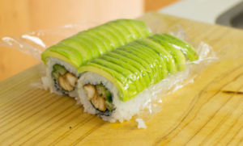

| 材料：鸡胸肉 | 数量:1条 |
| 材料：寿司米饭 | 数量：120克 |
| 材料：去皮牛油果 | 数量：半个 |
| 材料：香油 | 数量：1茶勺 |
| 材料：橄榄油 | 数量：2茶勺 |
| 材料：海盐 | 数量：少许 |
| 材料：照烧酱、黄瓜条 | 数量：适量 |
步骤一: 把一茶匙的芝麻油和两茶匙橄榄油放在煎锅里加热。 拿一块鸡胸肉， 切成两片或三片（一卷需要两片大约3到4厘米宽），并在一边撒上一点海盐。 把盐腌的面朝下放在锅里，另一边洒一点盐。
步骤二: 煎鸡胸肉的时候不断反面，感觉快熟的时候可以拿叉子插入肌肉最厚的部分，观察流出来的汁，如果是清澈无色而不是粉红色的， 代表熟成刚刚好，此时淋入照烧酱，包裹均匀入味后盛放冷却。千万不要把鸡肉煎老了，不然口感会很柴。
步骤三: 这个寿司卷是米饭在紫菜外面的。把寿司帘用保鲜袋装起来防止米饭粘连。 然后把准备好的寿司米饭均匀的抹在寿司紫菜上（寿司米的做法在之前的菜谱中有介绍） 不同于小卷的方法，做这种卷的时候要米饭涂满在紫菜上，不留空隙。然后将紫菜翻过来，米饭在下面。
步骤四: 在紫菜的一侧放上两条鸡胸肉（首尾相接，正好是紫菜的长度）放上几根细黄瓜条，淋上照烧酱。
步骤五: 开始卷。
步骤六: 将牛油果放平，用刀尖快速划过，切成1毫米左右的薄片。 然后用手轻轻的向一侧压平，像推倒的多米诺骨牌一样。用刀切去两边的尖角。
步骤七: 这种紫菜卷要卷成方形。卷起来、压实、往前滚一下、再压实。
步骤八: 借助刀子把牛油果片放在寿司上。铺上保鲜膜，用寿司帘再次压一下，使其紧实，不容易散开。
步骤九: 对半切开，对其，不要撕开保鲜膜，把寿司切成3cm左右的小段。 切的时候每切一刀都要用湿布擦一下刀子或者把刀子过一下水，防止米饭粘连。
步骤十: 挤上照烧酱、撒上白芝麻，即可。
 可乐鸡翅
可乐鸡翅
 红烧排骨
红烧排骨
 红烧黄骨鱼
红烧黄骨鱼